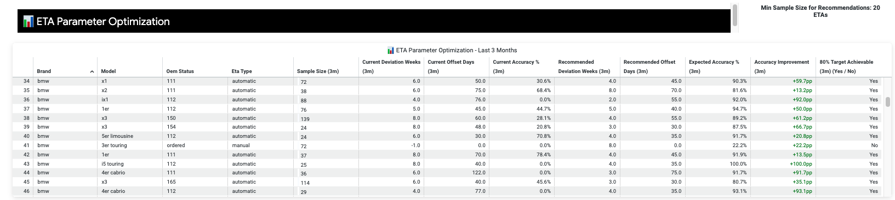

ETAs at FINN
What they are, how we built them,
how we steer them.
01 — What is an ETA?
A prediction.
Not a promise.
An ETA is our best estimate of when a vehicle arrives. Every prediction tracked — not just the last one before delivery.
22.5%
Early arrivals
61.9%
ETA in range
15.6%
Late arrivals
Last 3 calendar months
02 — How We Built It
Q4 2025:
Full reset.
1
Analyzed all historic delivery data
Patterns, accuracy gaps, and brand-level deviations from 2024 onward
2
Aligned directly with every OEM
Updated production & transport data, current lead times, model-specific logic
3
Reset & relaunched logic for all brands
Shifted from "Earliest ETA" to "Most Likely ETA" with symmetric deviation windows
Data team × CLM
01 — Our Mission
The most realistic
prediction possible.
Uncertain → show a wide range
Don't suggest certainty where there isn't any.
High deviation weeks
Most Likely ETA
Confident → show a narrow range
Signal precision where the data supports it.
Most Likely ETA
Small deviation weeks
Target: maximum efficient activations · no unnecessary customer delays · no unnecessary underutilization
01 — Limitations
What we can't
fully control.
Production disruptions — strikes or part shortages — we may only get black cars, no grey. Missing features, wrong configs.
Blocked logistics routes — Suez, Red Sea — transportation delays with no reliable ETA for recovery.
Limited OEM data — not every manufacturer shares status — insecure delivery timing, hard to plan activations.
Global supply chains are inherently unpredictable. Our role: be as accurate as possible within those constraints.
02 — Results
ETA Accuracy:
how we measure it.
ETA Accuracy = % of ETA predictions landing within the predicted range, based on actual vehicle arrival.
Every prediction counts — not just the last one before delivery
Continuous review — weekly adjustments, major updates monthly per brand
Data-driven adjustments — concrete parameter recommendations from actuals:

03 — Setting ETAs
Two approaches.
Very different visibility.
OEMs shown are an exemplary selection
Automated
BMW
Seat
Cupra
StellantisNew since mid March
Automatic readout of live production status
Model-based predictions via status, location & transport time
Continuous updates as the vehicle moves
Manual
MG
BYD
Hyundai
Kia
No automated data feed from OEM
Manual process — direct OEM & compound calls
Weekly adjustments — manual review and ETA updates
03 — Example: BMW
Production status
powers ETA logic.

BMW: status codes map to ETA offsets automatically
05 — ETA vs. Website Go-Live
What drives availability
& ETA accuracy.
OEM Adherence
1.1
OEM delivery reliability
→
High reliability of delivery plan
1.2
OEM config reliability
Data Timeliness
2.1
Regular production & transportation updates
→
Transparency and planability
2.2
Long time-horizons of updates (3m+)
Operational Flexibility
3
Flexible call-off terms
→
Possibility to buffer volatility
4
Low config variety
→
More switching options
Illustrative
05 — ETA vs. Website Go-Live
No ETA, no go-live.
Confidence
Uncertainty
Data situation
Deviation range
% Online
High reliability · daily/weekly updates · long horizon
~100%
High reliability · regular updates · solid horizon
~70%
Medium reliability · medium data availability
~40%
Volatile delivery · no/low data · short horizon
<20%
Deviation range and % online are independent — actual combination depends on OEM data quality and reliability.
05 — ETA vs. Website Go-Live
How OEMs compare.
BMW
Hyundai
Stellantis
1.1 Delivery reliability
High
High
Low
1.2 Config reliability
High
Medium
High
2.1 Production & transport updates
High
Low
Low
2.2 Update horizons (3m+)
Medium
Low
Medium
3 Flexible call-off terms
Medium
High
Medium
4 Low config variety
Low
Medium
Medium
Zoom in
Stellantis
Delivery timing: Struggles with monthly plan adherence — but typically delivers within an 8–10 week window.
Underutilization risk: When delivery lands in the agreed month, activation window is narrow — risk of unsold cars and extra costs.
Until March: Limited production/transport data — ETA relied on delivery plan + verbal OEM info only.
Quarterly batches: Internal orders placed quarterly → planning horizon limited to ~3 months, remainder highly uncertain.
05 — ETA vs. Website Go-Live
How we handle it.
01
Use historic data & OEM experience
Past delivery patterns and OEM knowledge fill the gap when live data is absent.
02
Only put a defined % online
Risk appetite set jointly with Ops & Growth — limits customer exposure to uncertain ETAs.
03
Close & regular OEM alignment
Direct calls with OEMs and compounds to capture the latest delivery status and risks.
04
Continuous manual adjustment
ETAs reviewed and updated continuously — not set-and-forget. Every shift tracked against targets.
Zoom in: Stellantis — what we changed
Weekly alignment format: Introduced dedicated weekly sync including a logistics expert from Stellantis.
Data push: Pushed Stellantis to deliver a comprehensive data report once per week.
Automatic read-out: Implemented automatic data ingestion → faster ETA reflection in FINN systems and more accurate predictions.
06 — Target Picture
Reduce risk upstream.
Manage it downstream.
Limited control
Reducing risk upstream
Reliable delivery contracts + enforcement
Minimal config variety
Long OEM data horizons (3m+)
In control
Managing risk downstream
If we manage config and timing deviations well via switching and targeted alternatives, we can significantly reduce communicated delivery windows — a win for customers and FINN.
How
Switch to available cars at compound that meet the delivery window — invisible to customer, effective as baseline
How
Offer targeted alternatives close to signed config (color, minor features) — alternative booking process, potential upsell
How
Proper vehicle grouping where applicable to maximize efficiency
Process: Structured async alignment format to be introduced — regular sync on risk appetite, planning horizon & OEM status across CLM, Ops & Growth.
Q&A
Questions, ideas.